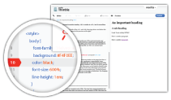

Steps

Review the Thimble project on Webmaker.org description, click the Get Started button at the bottom and explain to learners that they will be working through the comments in the left side of the editor.
-

Allow learners to work individually or together. You might also allow learners to choose a different beginner Thimble project they would like to work with.
- 
Float around to help learners that get stuck. In the Hands on Hacking hacktivity, learners will have a specific task to complete, so for now, allow them to play with Thimble and get used to the interface. If learners have already created a How-to video, ask them to switch out the videos.
-
Have learners publish their projects and post them to a blog or save links in an Etherpad.